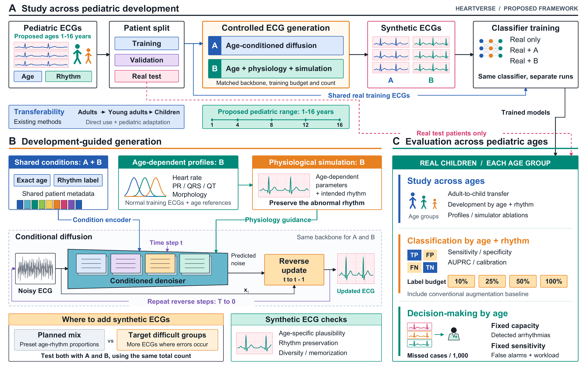
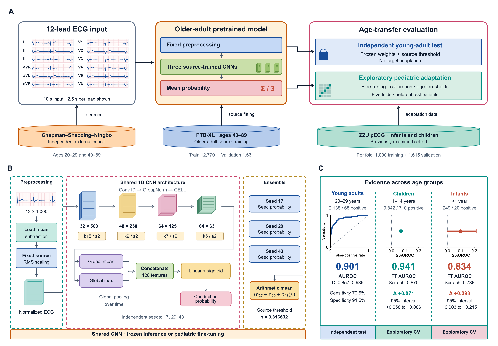

Explore the proposed ECG research framework, age-transfer classification results, and the published references behind the anatomy explorer.

View full figure ↗ Figure 1. Proposed Heartverse framework for developmental physiology-guided ECG augmentation and pediatric arrhythmia detection. (A) Pediatric ECGs are harmonized and split by patient before segmentation. Adult-to-child transferability is a supporting investigation. Generator A uses age conditioning, whereas generator B additionally uses developmental physiology and simulation. Both share the same real training patients, backbone and training budget. The same classifier is trained separately on real ECGs only, real plus A, or real plus B, with conventional augmentation as an additional baseline. (B) Exact age, rhythm labels and shared patient metadata condition generation. Normal training ECGs and published age references define developmental profiles that guide physiological simulation while preserving the intended abnormal rhythm. Planned and error-targeted allocation are evaluated with both generators; targeting uses training-internal validation. Synthetic counts and age-rhythm composition are matched between generators within each allocation strategy. (C) Study findings, classification performance and retrospective review-prioritization outcomes are reported by age group and rhythm on held-out real patients. All label-dependent components respect the same pediatric label budget. Missed cases, false alarms and review workload are assessed using observed test prevalence and validation-set thresholds.
Ages 1-16 years are the proposed scope; final age coverage and group boundaries depend on available patients and reliable rhythm labels. Exact age guides generation, while age groups summarize evaluation; axis ticks indicate age values rather than fixed group boundaries. The figure depicts a proposed study, and its signals, distributions and model blocks are schematic rather than empirical results. Demonstrating clinical decision benefit requires a clinician reader study or prospective evaluation.
Preparation
Selected one task: detecting conduction abnormalities using two classes—conduction-positive and conduction-negative .
Matched labels across datasets: we used a common label definition. The mapping still needs clinician review.Defined age groups: older adults 40–89 , young adults 20–29 , children 1–14 , and infants under 1 year .Standardized the ECGs: we used 12 leads, 10-second recordings, and a 100 Hz sampling rate , with consistent voltage units.Separated patients: the pediatric analysis used one ECG per patient and five patient-level folds . Each patient was tested by models that had not used that patient for training or adjustment.Evaluated real ECGs: we reported results separately for each age group. Infant findings remain uncertain because there were only 20 positive cases .
Transferability Testing Study design and results for testing how ECG conduction classification transfers across age groups.

View full figure ↗ Figure 2. Study design for evaluating age transfer in ECG conduction classification. An older-adult-trained model was evaluated without adaptation on an independent young-adult cohort. Pediatric experiments compared older-adult and young-adult fine-tuning with training from scratch using identical pediatric training patients. Five patient-level folds kept test patients separate from training, model selection, calibration, and threshold selection. Young-adult evaluation assessed direct transfer, while exploratory pediatric experiments assessed the benefit of adult pretraining.
Results: ECG classification across age groups
We measured performance using AUROC , which shows how well a model separates conduction-positive from conduction-negative ECGs. Higher values are better: 0.5 means chance-level performance, and 1.0 means perfect separation .
A. Older adults → young adults
The older-adult model was tested on an independent young-adult dataset without additional training or adjustment .
It achieved:
AUROC: 0.901 , with a 95% confidence interval of 0.857–0.939 .Sensitivity: 70.6% —the percentage of positive cases correctly identified.Specificity: 91.5% —the percentage of negative cases correctly identified.
The same model achieved AUROC 0.893 in the external older-adult group.
These results support direct transfer: the model used what it had learned from older adults to make useful predictions in young adults. The similar scores do not prove that performance was exactly equal in both age groups.
B. Transfer to children
We tested the models on 9,842 children aged 1–14 , including 710 conduction-positive cases .
Training approach AUROC
Older-adult model given additional pediatric training 0.941 Young-adult model given additional pediatric training 0.874 New model trained using pediatric data alone 0.870
Giving an existing model additional training is called fine-tuning . Training a new model without previous adult training is called training from scratch .
Older-adult fine-tuning improved AUROC by 0.071 compared with training from scratch. The estimated 95% uncertainty range for this improvement was 0.058–0.086 , entirely above zero.
At the selected decision thresholds:
The adapted older-adult model detected 590 of 710 positive cases .
The model trained from scratch detected 488 of 710 .
They produced similar numbers of false positives: 887 versus 894 . These are negative cases incorrectly flagged as positive.
Both approaches used the same pediatric training patients. This supports the benefit of earlier older-adult training under our study conditions.
Starting with the young-adult model showed no clear extra benefit. Its AUROC improvement was 0.004 , with an uncertainty range of −0.004 to 0.013 , which includes zero.
C. Transfer to infants
We tested the models on 249 infants , including 20 conduction-positive cases .
Training approach AUROC Positive cases detected False positives
Older-adult model given additional pediatric training 0.834 11/20 14 Young-adult model given additional pediatric training 0.723 9/20 22 New model trained using pediatric data alone 0.736 7/20 14
The adapted older-adult model detected four more positive infants than the model trained from scratch, with the same number of false positives.
However, it still missed 9 of 20 positive cases . The uncertainty range for its AUROC improvement was −0.003 to 0.215 . Because this includes zero, we cannot confidently confirm an improvement.
These results suggest that older-adult training may help with infant ECGs, but more evidence is needed. Reliable infant screening has not been established.
Next steps
Build age-specific profiles: Use pediatric references and normal training ECGs to describe heart rate, intervals, and waveform variation.Configure the simulator: Generate age-appropriate ECGs while preserving the intended arrhythmia.Compare two generators:
A: Age-conditioned diffusion.B: The same model plus developmental profiles and simulation guidance.Check synthetic ECG quality: Assess age plausibility, rhythm preservation, waveform quality, diversity, and copying.Test augmentation strategies: Compare a planned sample mix with more examples for difficult age–rhythm groups. Match synthetic counts and use training-internal validation to identify weaknesses.Evaluate classification: Compare real data alone, conventional augmentation, and synthetic augmentation on held-out real children.Test data efficiency: Repeat with 10%, 25%, 50%, and 100% of pediatric labels, applying the same budget to generators and classifiers.Measure decision-support value: Compare detected arrhythmias at fixed review capacity and false alarms at matched sensitivity.Analyze what helps: Report results by age and rhythm; separate the effects of developmental profiles, simulation, and targeted augmentation.
ANATOMY EXPLORER
References & assumptions Sources for the size measurements, anatomy, and motion shown in the explorer.
3D model: Human_heart_3d_model by marxtrax · CC BY 4.0 . Adapted materials, lighting, color contrast and visual scale.
What changes when you move the slider?
How does the 4D cycle work? The cycle scrubber plays a gentle illustrative deformation of this existing mesh. It is not measured cardiac motion and does not change the selected published LVEDV reference. Rotation and zoom only change the view. The outline stays at the selected sex’s BSA 1.0 m² reference for children, or the 143 mL pooled mean for adult men. Cycle timing and deformation are visual assumptions. No patient-specific contraction, pressure, ECG or infant-transfer model is present.
What does the motion reference show? The separate panel replays a released shift-invariant baseline comparison from the Time2Track repository, with prediction and ground truth labeled as in the source. It preserves all 49 frames. The display rate is adjustable and is not measured heart rate. This example is independent of the size controls and the illustrative 3D heart; the site does not run the ECG model. Use the expand button to inspect individual frames.
Where the evidence stops A cavity volume does not define a unique 3D heart. The source mesh is an artistic anatomical cutaway with its own proportions. Its cavity volume is not measured here. A change in size is not an age prediction. Statistical summaries from different cohorts are not interchangeable. The pediatric reference covers ages 4–18. The adult reference is a separate pooled population, not an extension of the childhood curve. Neither supports infant extrapolation or adult-to-child algorithm transfer. This explorer does not accept individual patient data. Its separate motion panel displays a released research example.
References checked October 14, 2026. Full data and assumptions are included in the downloadable reference file.
↓ Download reference & current setting